Eductional Purpose ONLY EP All documents: EP4523100
17.06.2025 Amended description with annotations
SPLIT STAY RANKING AND MATCHING
5
RELATRED APPLICATION
[0001] This application claims the priority benefit of U.S. Provisional Application No. 63/340,163, filed on May 10, 2022, which is hereby incorporated by reference in its entirety.
10
TECHNICAL FIELD
[0002] The present disclosure generally relates to special-purpose
machines that manage data processing and improvements to such variants, and to the technologies by which such special-purpose machines become improved
15 compared to other special-purpose machines for generating split stay searches.
BACKGROUND
[0003] Network site users can create content for viewing and interaction by other network site users (e.g., booking, registering, subscribing, viewing of
20 listings). The posted content can be updated, created, or deleted, and it can be computationally challenging for a network site to return valid search results to network site users searching for content with specified parameters (e.g., dates, categories, prices, quantity). For example, if there are a large number of users posting and updating content and also a large number of users submitting
25 complex searches for the posted content, any delay in computation due to query complexity may cause inaccurate results to be returned and cause large computational resource consumption (e.g., processing, memory, network overhead).
[0003Al US2018/330283 discloses approaches to improving mixture queries and
30 booking split stays are described herein. According to some aspects, a user utilizes an exploration tool to search for available lodging. A mixture query is generated based on the stay information received from the user and potential
split stays are identified and presented to the user. In some aspects, the split stays
1
are identified based on user-specified split stay criteria, search results are obtained from a local database of " live" pricing and availability information, and a selected split stay option is booked on behalf of the user. Example split stay criteria includes criteria pertaining to an amenity or characteristic of the
5 available lodgings or the available rooms.
SUMMARY
>[0003Bl According to an aspect, there is provided a method according to claim 1. According to an aspect there is provided a system according to claim 14.
10 According to an aspect there is provided a computer-readable storage device according to claim 15. Optional features are set out in the dependent claims.BRIEF DESCRIPTION OF THE DRAWINGS
[0003][0004] Various ones of the appended drawings merely illustrate example
15 embodiments of the present disclosure and should not be considered as limiting its scope.
17.06.2025 Amended description with annotations-9 Pages
What is claimed is:
1. A method comprising:
storing (905), by a network site, a plurality of listings from a plurality of different posting end-users;
receiving(910), from a searching end-user, a listing request for one or
more of the listings posted to the network site, the listing request specifying a multiple-day length of stay parameter;
determining (915)that the multiple-day length of stay parameter of the listing request transgresses a minimum length of stay threshold;
identifying a set of individual listings of the plurality of listings that match the listing request;
determining that a quantity of listings in the set of individual listings fails to satisfy a minimum available inventory threshold;
in response to determining that .ithe multiple-day length of stay
parameter of the listing request transgresses the minimum length of stay threshold and (ii) the quantity of listings in the set of individual listings fails to satisfy the minimum inventory threshold , generating (920) a combined listing
(520) comprising a first listing of the plurality of listings associated with a first portion of the multiple-day length of stay parameter and a second listing of the
plurality of listings associated with a second portion of the multiple-day length of stay parameter; and
causing (925), on a user device of the searching end-user, presentation of the combined listing together with one or more other listings of the plurality of listings that match the listing request in a ranked order.
2. The method of claim 1, further comprising:
identifying a set of individual listings of the plurality of listings that match the listing request; and
determining that a quantity of listings in the set of individual listings fails
30 to satisfy a minimum available inventory threshold,
i.herein the combined listing is generated in response to determining that the quantity of individual
1
listings in the set of individual listings fails to satisfy a minimum available inventory threshold.
2. The method of claim 1, wherein the listing request comprises a
destination category, further comprising:
determining that the first and second listings match the destination category, wherein the combined listing is generated in response to determining that the first and second listings match the destination category';'
4 . The method of claim 3,,,,optionally wherein the destination category comprises at least one of national parks, beaches, surfing, camping, theme parks, or skiing.
3-. The method of claim 1, wherein the multiple-day length of stay parameter specifies a quantity of days or a flexible duration of stay, and wherein
the minimum length of stay threshold comprises five days.
16. The method of claim 1, wherein generating the combined listing compnses:
identifying a subset of individual listings of the plurality of listings that
satisfies one or more search criteria of the listing request independent of the multiple-day length of stay parameter;
for each individual listing in the subset, generating a plurality of groups of stays on which the individual listing is available, each group of stays being associated with availability of the individual listing during different portions of
the multiple-day length of stay parameter;
refining the plurality of groups using an aggregator based on a user profile of the searching end-user;
determining that a first combination of the portion of availability of a first refined group of a first individual listing (522) in the subset with the portion
30 of availability of a second refined group of a second individual listing (524) matches the multiple-day length of stay parameter; and
in response to determining that the first combination matches the
multiple-day length of stay parameter, forming the combined listing based on the
first refined group of the first individual listing and the second refined group of the second individual listing,,_
optionally wherein:-;-7. The method of claim 6, '.herein______ each of the different portions comprises a set of days starting from a start date and ending prior to an end date, and wherein each of the different portions comprises a set of days starting from a date later than the start date and ending on the end date,or8. The method of claim 6, i.herein______ a first group of the stays on which the individual listing is available comprises a first half of the multiple-day length of stay parameter, and wherein a second group of the stays on which the individual listing is available
comprises a second half of the multiple-day length of stay parameter.
9. The method of claim 64:, further comprising:
determining that a second combination of the portion of availability of the first refined group of the first individual listing with the portion of
availability of a third refined group of a third individual listing matches the multiple-day length of stay parameter;
computing a rank for the first and second combinations; and
selecting either the first or second combination to generate the combined listing based on the computed rank of the first and second combinations.
.610. The method of claim 95, wherein the rank for the first and second combinations is computed based on individual ranks of the first, second and third individual listings.
I 711The method of claim 95, wherein computing the rank for the first and second combinations comprises:
computing a first difference between the portion of availability of the first refined group of the first individual listing and the portion of availability of the second refined group of the second individual listing;
computing a second difference between the portion of availability of the
first refined group of the first individual listing and the portion of availability of the third refined group of the third individual listing; and
associating a first rank with the first combination that is greater than a second rank associated with the second combination in response to determining that the first difference is smaller than the second difference.
812. The method of claim 95, wherein computing the rank for the first and second combinations comprises:
computing a first compatibility criterion between the first individual
listing and the second individual listing;
computing a second compatibility criterion between the first individual listing and the third individual listing; and
associating a first rank with the first combination that is greater than a second rank associated with the second combination in response to determining
that the first compatibility criterion is associated with a higher level of compatibility than the second compatibility criterion"'"
13. The method of claim 12 ,
____________optionally wherein the first and second compatibility criteria represent at
25 least one of: quantity of overlapping listing attributes, quantity of listing attributes that match the user profile, price, image qualities, or distances between locations.
914 The method of claim 64:, further comprising:
determining that a given individual listing matches the listing request; and
excluding the given individual listing from being used as a basis to form one or more combined listings.
1015. The method of claim 1, wherein
______the combined listing is a first combined listing, and the method further compnses
_______preventing presentation of a second combined listing in response to determining that the second combined listing includes the first listing that is also included in the first combined listing to introduce diversity in the presentation of the combined listing together with the one or more other listings; or
the method further comprises applying one or more neural networks to
generate the combined listing, to generate the ranked order, to compare a first combined listing with a second combined listing, and to select whether to present a given listing as part of a given combined listing or as an individual listing in the presentation.1116 The method of claim 1, further comprising:
determining whether the listing request comprises a destination category;
and
modifying a level of flexibility in ranking and combining listings to form
the combined listing based on determining whether the listing request comprises
the destination category';'
17. The method of claim 16,
optionally wherein the method further comprisesffig:
____ determining that the level of flexibility in ranking and combining
corresponds to an inflexible threshold level; and
in response to determining that the level of flexibility in ranking and combining corresponds to the inflexible threshold level, increasing a level of diversity among the listings used to form the combined listing_.
1218 The method of claim 1, wherein the plurality of listings includes at least one of locations or experiences';'
19. The method of claim 1, optionally wherein the method further comprisesffig-;____ ---_determining that a distance between the first and second listings falls within a threshold range comprising a minimum distance and a maximum distance, wherein the combined listing is generated using the first and second
listings in response to the distance between the first and second listings being between the minimum distance and the maximum distance of the threshold range.
1320. The method of claim 1, further comprising automatically selecting a
destination category to base the generation of the combined listing based on past interactions the searching end-user had with the network site';'
21. The method of claim 20,_____ optionally wherein the past interactions includes at least one of: filtering
15 criteria, types of destinations searched for in a past threshold interval, price point of searched listings, or family status.
22. The method of claim 1, further comprising:
a-pplying one or more neural neti.vorks to generate the combined listing,
20 to generate the ranked order, to compare a first combined listing v«ith a second combined listing, and to select '.vhether to present a given listing as part of a given combined listing or as an individual listing in the presentation.1423.
A system comprising:
one or more processors (1110) of a machine (1100); and
a memory (1130) storing instruction (1116) that, when executed by the one or more processors, cause the machine to perform operations comprising:
storing(905), by a network site, a plurality of listings from a plurality of different posting end-users;
receivingJ.2.lQl, from a searching end-user, a listing request for one or more of the listings posted to the network site, the listing request specifying a multiple-day length of stay parameter;
determining 915that the multiple-day length of stay parameter of the listing request transgresses a minimum length of stay threshold;
identifying a set of individual listings of the plurality of listings that match the listing request;
determining that a quantity of listings in the set of individual listings fails to satisfy a minimum available inventory threshold;
in response to determining that .ill_the multiple-day length of stay parameter of the listing request transgresses the minimum length of stay threshold >and (ii) the quantity of listings in the set of individual listings fails to satisfy the minimum available inventory threshold, generating (920) a combined listing (520) comprising a first listing of the plurality of listings associated with a first portion of the multiple-day length of stay parameter and a second listing of the plurality of listings associated with a second portion of the multiple-day length of stay parameter; and
causing (925), on a user device of the searching end-user, presentation of the combined listing together with one or more other listings of the plurality of listings that match the listing request in a ranked order.
A machine-readable storage device embodying instructions(1116) that, when executed by a machine (1110), cause the machine to perform operations compnsmg:
storing(905), by a network site, a plurality of listings from a plurality of
different posting end-users;
receiving , from a searching end-user, a listing request for one or more of the listings posted to the network site, the listing request specifying a multiple-day length of stay parameter;
determining !.2.121_that the multiple-day length of stay parameter of the listing request transgresses a minimum length of stay threshold;
identifying a set of individual listings of the plurality of listings that match the listing request;
determining that a quantity of listings in the set of individual listings fails to satisfy a minimum available inventory threshold
in response to determining that .ill_the multiple-day length of stay parameter of the listing request transgresses the minimum length of stay threshold and (ii) the quantity of listings in the set of individual listings fails to satisfy the minimum available inventory threshold, generating (920) a combined
5 listing (520) comprising a first listing of the plurality of listings associated with a first portion of the multiple-day length of stay parameter and a second listing of the plurality of listings associated with a second portion of the multiple-day length of stay parameter; and
causing (925), on a user device of the searching end-user, presentation of
10 the combined listing together with one or more other listings of the plurality of listings that match the listing request in a ranked order.
25. A method comprising: accessing a plurality of listings;
15 generating a plurality of signals for each listing in the plurality of listings;
obtaining external environment information for a location associated '.vith each listing;
accessing a plurality of guidelines associated v«ith a given category;
20 determining that a collection of data associated v«ith a first listing of the plurality of listings corresponds to the plurality of guidelines associated v«ith the given category, the collection of data comprising a first set of signals in the plurality of signals associated v«ith the first listing and a first set of the eJcternal environment information of the location associated v«ith the first listing;
25 computing a confidence score for the first listing matching the given category; and
associating the first listing v«ith the given category based on the computed confidence score.
30
26. A method comprising:
accessing a plurality of categories;
computing a rank for each of the plurality of categories based on a specified location, the rank being computed based on a uniqueness value of each
5 of the plurality of categories relative to the specified location;
identifying a slot associated '.vith a theme in a graphical user interface; identifying a subset of the plurality of categories corresponding to the
theme associated v«ith the slot;
selecting a given category of the subset of the plurality of categories
10 based on the rank associated v«ith the given category; and
presenting the given category in the slot of the graphical user interface.
17.06.2025 Letter accompanying subsequently filed items
Representative:
Henry Aldridge Venner Shipley LLP 200 Aldersgate London EC1A 4HD United Kingdom
Phone: (0)20-7600-4212
80298 Munich Germany
Tel. +49(0)89 2399-0
P.O. Box 5818 2280 HV Rijswijk Netherlands
Tel. +31(0)70 340-2040
E-mail: mail@vennershipley.co.uk 10958 Berlin Germany
Tel. +49(0)30 25901-0
The document(s) listed below is (are) subsequently filed documents pertaining to the following application:
Application number:
EP23726210.0 I
Applicant's or representative's reference
HAN138394EP1 I
Description of document Original file name Assigned file name
4 Amended description with annotations markedup description.pdf DESC-HWA-1.pdf
5 Letter relating to the search or examination procedure Letter to EPO Munich.pdf EPLETT-1.pdf
Signatures
Place: London, UK
Date: 17 June 2025
Signed by: /Henry Aldridge/
Representative name: Henry Aldridge
Capacity: Representative
Function of person signing: Representative
25.11.2024 Copy of the international preliminary report on patentability , Page-1
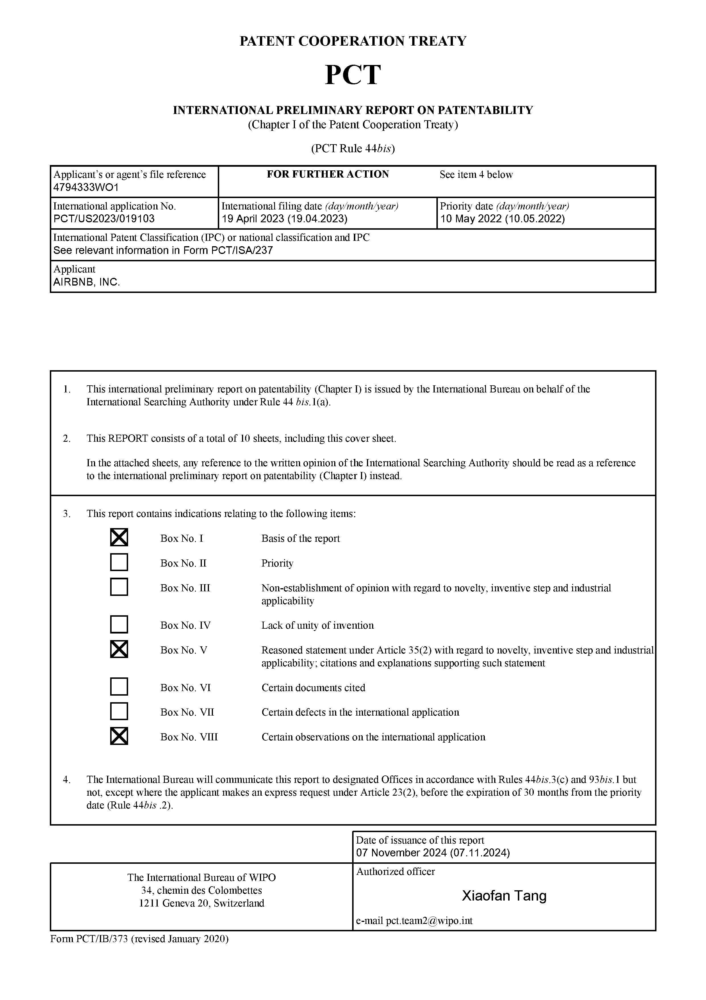
25.11.2024 Copy of the international preliminary report on patentability , Page-2
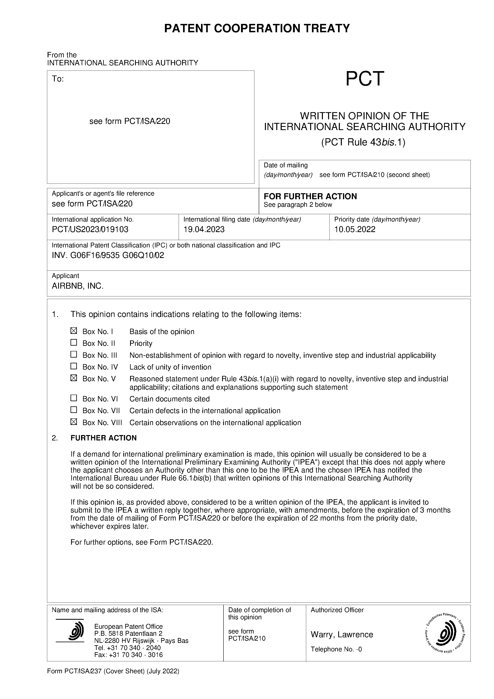
25.11.2024 Copy of the international preliminary report on patentability , Page-3
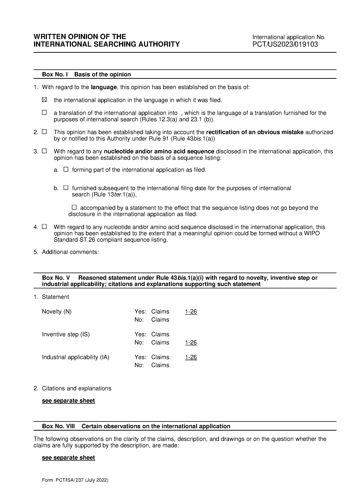
25.11.2024 Copy of the international preliminary report on patentability , Page-4
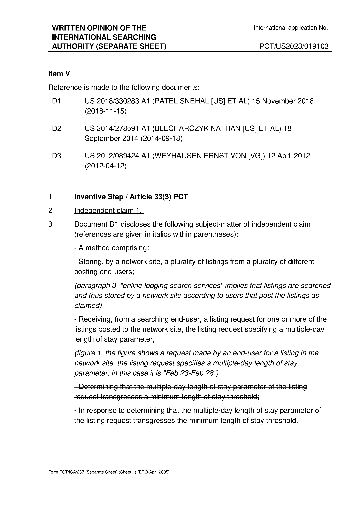
25.11.2024 Copy of the international preliminary report on patentability , Page-5
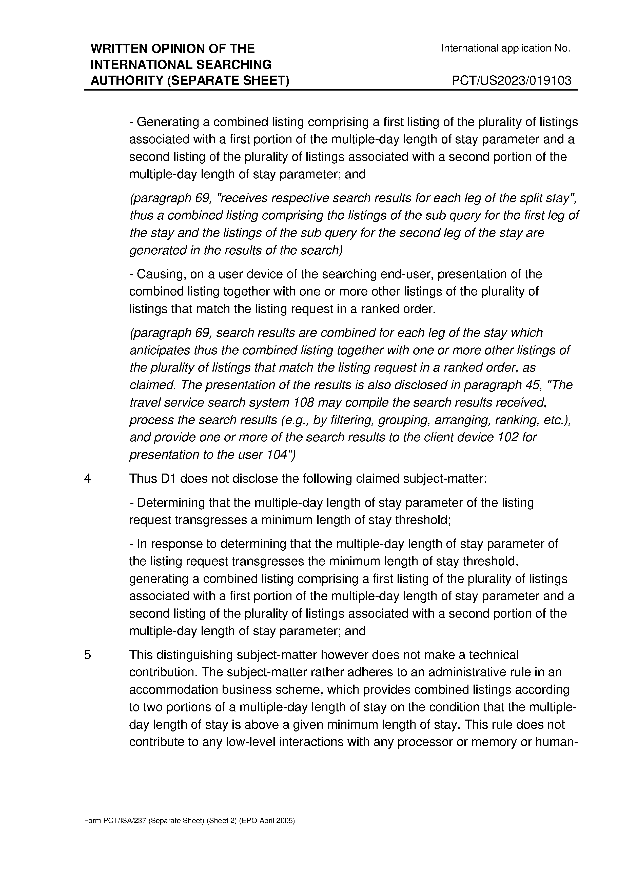
25.11.2024 Copy of the international preliminary report on patentability , Page-6
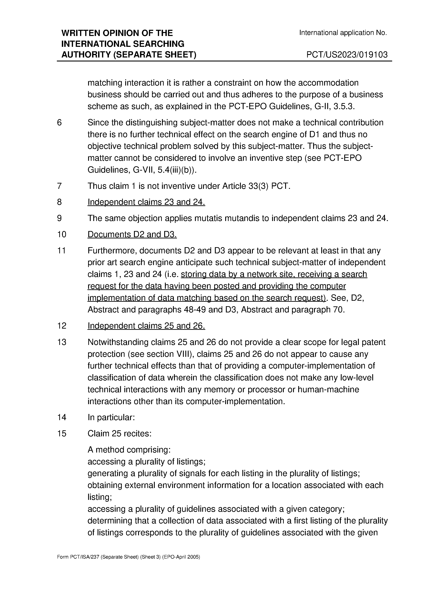
25.11.2024 Copy of the international preliminary report on patentability , Page-7
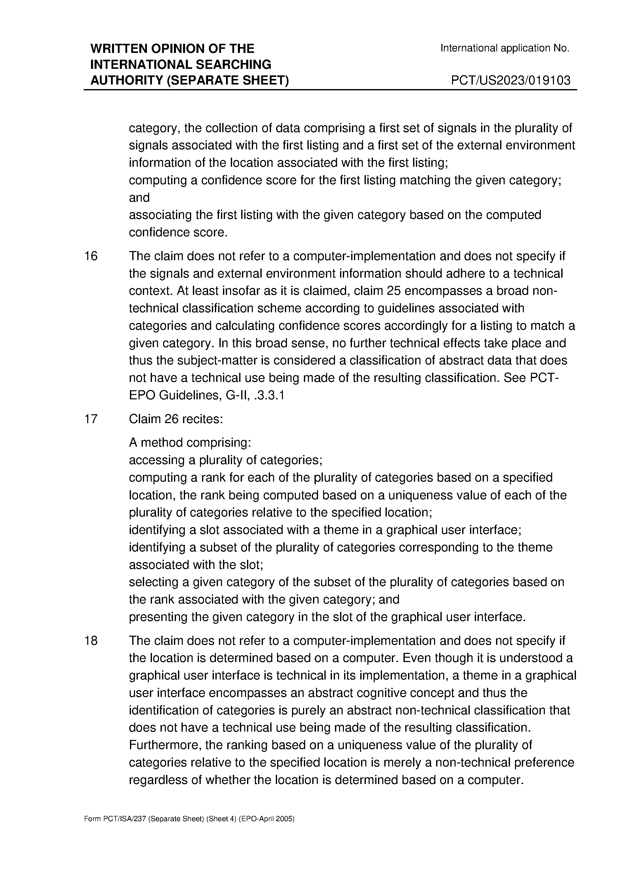
25.11.2024 Copy of the international preliminary report on patentability , Page-8
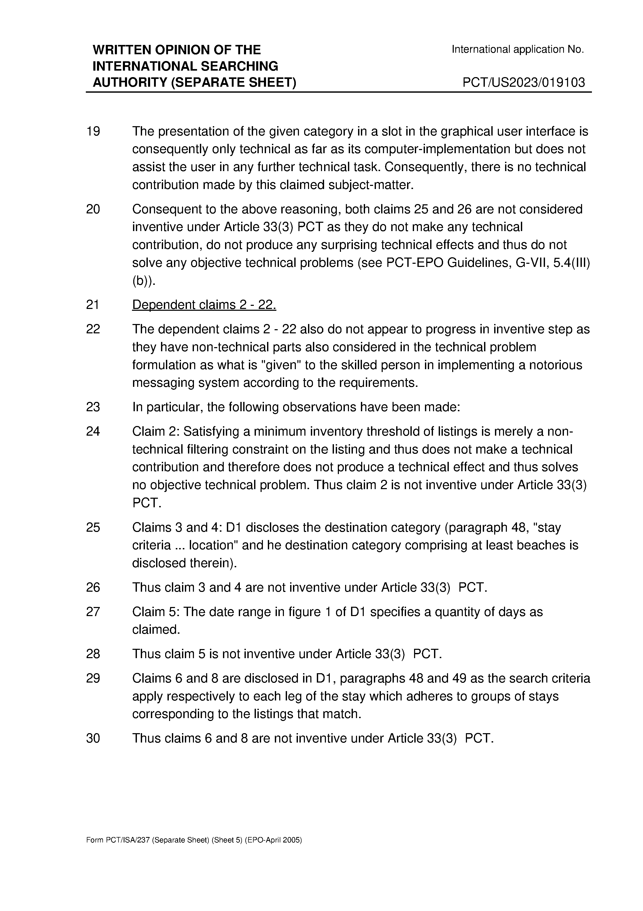
25.11.2024 Copy of the international preliminary report on patentability , Page-9
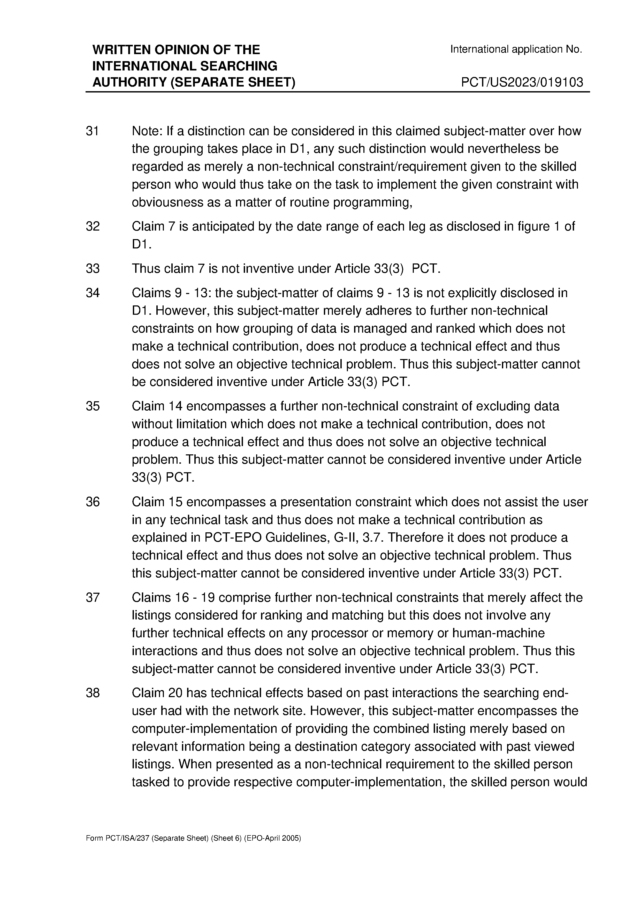
25.11.2024 Copy of the international preliminary report on patentability , Page-10
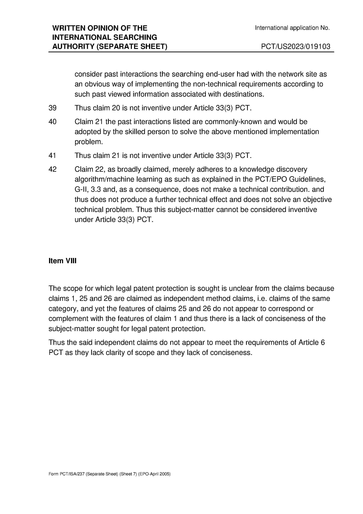
17.12.2024 Communication concerning correction of deficiencies in written opinion/amendment of application/payment of claims fee
communicATION 12-24
Communication concerning correction of deficiencies in written opinion/amendment of application/payment of claims fee , Page-1
Communication concerning correction of deficiencies in written opinion/amendment of application/payment of claims fee , Page-2
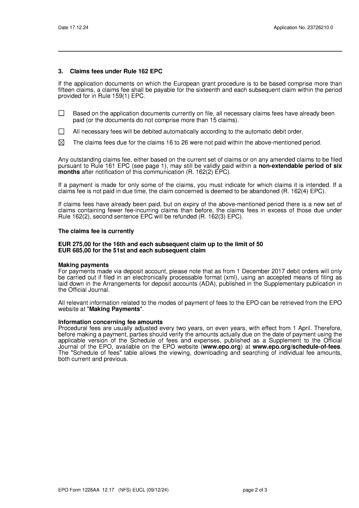
Communication concerning correction of deficiencies in written opinion/amendment of application/payment of claims fee , Page-3
26.10.2026 Transmittal of third party observations to applicant
Personal details
Name
Ayman Salem
Address
Port Said-Egypt
Email
aymanhsalem@gmail.com
Phone
+201 030965388
Subject
Appllcatlon Number
2372621 0.0
Publication Number
EP45231 00
Title
SPLIT STAY RANKING AND MATCHING
Observations
@ Upload document
Observations document
Fiie attached
TIPA1.pdf
Facts and evidence Non-Patent literature Non-Patent literature 1
Reference
EP45231 OO_Supplementary_Technical_Annex
Title
EP45231 OO_Supplementary_Technical_Annex
Author
Ayman Salem Date of Publication 23.10.2026
File attached
SUPPLEMENTARY TECHNICAL ANNEX.pdf
SUPPLEMENTARY TECHNICAL ANNEX
European Patent Application: 23726210.0
Publication Num ber: EP4523100
Title: SPLIT STAY RANKING AND MATCHING
These supplementary materials relate to the third-party observations previously submitted under Article 115 EPC concerning the patentability of the above application.
During preparation of the combined PDF submitted with the original observations, the Technical Annex was inadvertently omitted and a duplicate Video Annex was included instead.
This submission provides the omitted Technical Annex as supplementary technical evidence. It should be read together with the previously submitted Executive Summary, Documentary Annex and Video Annex.
The Technical Annex explains the backend implementation of the Hotels Plus system, including relevant database structures, code and room/hotel relocation functionality.
It is intended to assist in understanding the technical operation demonstrated in the previously submitted visual evidence.
The supplementary material supports the existing observations and is not intended to replace or materially alter their substantive arguments.